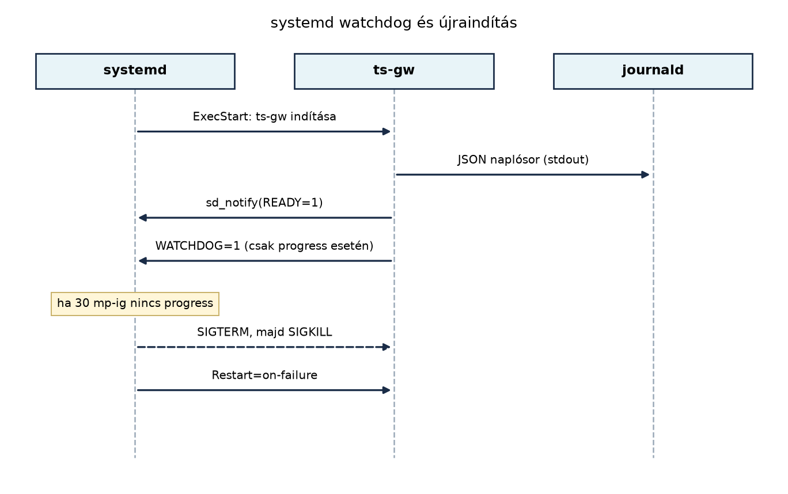

Az A ts-gw szolgáltatás C++-ban:
protokollfordítás MQTT-re alfejezetben elkészített
ts-gw már lefordítható és kézzel elindítható, a Store-and-forward: offline működés és visszatöltés
alfejezet pedig tartós SQLite-pufferrel egészítette ki. Éles
környezetben ez még kevés. Az üvegházban futó gatewaynek akkor is élnie
kell, ha a folyamat összeomlik, a gép újraindul, vagy egy frissítés
hibásnak bizonyul. Emellett a logokból gyorsan ki kell derülnie, hogy
melyik csomópont üzenete veszett el, és a telepítésnek reprodukálhatónak
kell lennie a fejlesztői géptől az edge hardverig.
Ebben az alfejezetben a ts-gw-t Linux-szolgáltatásként
és konténerben is üzemeltethetővé tesszük. A systemd biztosítja az
automatikus újraindítást és a watchdog-felügyeletet, a strukturált
JSON-naplózás a journald-ben kereshetővé teszi az eseményeket, a
többlépcsős Docker-build pedig kicsi, jól korlátozott futásidejű
image-et eredményez. A watchdog nem vakon küld életjelet: a gateway csak
akkor jelez, ha a fő adatút és az UDP-bemenet is előrehaladt.
Definíció. A systemd unit a systemd által
kezelt erőforrás (szolgáltatás, socket, timer, mount stb.) deklaratív
leírása. A szolgáltatások unitfájlja .service
kiterjesztésű, és a [Unit], [Service],
[Install] szekciókban adja meg, hogy mit, hogyan és mikor
indítson a rendszer.
Definíció. A systemd watchdog egy
szoftveres felügyelet: ha a szolgáltatás WatchdogSec
értéken belül nem küld életjelet, a systemd megöli és az újraindítási
politika szerint újraindítja a folyamatot. A folyamat a
WATCHDOG=1 üzenetet az sd_notify interfészen
keresztül, a $NOTIFY_SOCKET Unix-socketre írva jelzi. A
TerraSense gatewayben ez az életjel progress-alapú: csak akkor
megy ki, ha a figyelt számlálók az előző ellenőrzés óta elmozdultak.
Definíció. A Type=notify indítási mód azt
jelenti, hogy a szolgáltatás nem akkor tekinthető sikeresen elindultnak,
amikor a fork visszatér, hanem amikor a folyamat READY=1
üzenetet küld. Ugyanezen a csatornán megy a watchdog-életjel is. Ha a
folyamat nem küld READY=1-et, a systemd az indítást
hibásnak tekinti, és a Restart politika szerint
újrapróbálhat.
Definíció. A többlépcsős Docker-build olyan image-építés, ahol a buildhez szükséges eszközöket (compiler, fejlesztői fejlécek) egy külön építő konténerbe tesszük, majd a kész binárist és a minimális futásidejű függőségeket egy második, jóval kisebb image-be másoljuk.
Definíció. A systemd StateDirectory
beállítása egy szolgáltatás számára létrehozott, a szolgáltatás
felhasználója által írható állapotkönyvtárat jelent. A
ts-gw esetében ez a /var/lib/ts-gw, ahol a
tartós spool adatbázisa van. A systemd a könyvtárat az indítás előtt
hozza létre, a User/Group beállításnak
megfelelő tulajdonossal, ezért a folyamatnak nem kell rootként írnia a
/var/lib alá.
Az alábbi sequence-diagram a systemd és a ts-gw
együttműködését mutatja progress-alapú watchdog mellett:

A szolgáltatás tehát három dolgot ír: a szabványos kimenetre
JSON-sorokat (napló), a $NOTIFY_SOCKET-re
READY=1-et és csak előrehaladás esetén
WATCHDOG=1-et (életjel). A journald ezeket együtt tárolja,
és journalctl -u ts-gw paranccsal lekérdezhető.
A progress-alapú watchdog lényege, hogy a watchdog-szál nem a saját
életét figyeli, hanem a munkaszálakét. A ts-gw két
számlálót tart: a fő ciklus iterációnként és minden feldolgozott
spool-rekordnál növeli az egyiket, az UDP-fogadó szál pedig minden
poll körben a másikat. Ha a fő ciklus beszorul egy
SQLite-zárba, vagy az UDP-szál nem jut el a következő
poll-ig, a watchdog észleli, hogy az adott számláló nem
mozdult, és nem küld WATCHDOG=1-et. Így a rendszer nem
„gyógyítja meg” azt a hibát, amelytől a szolgáltatás valójában nem
működik.
A gateway üzemeltetési módjának kiválasztása több szemponttól függ:
| Szempont | systemd szolgáltatás | Docker-konténer |
|---|---|---|
| Újraindítás, watchdog | natív, jól integrált (Restart,
WatchdogSec, sd_notify) |
a konténer újraindítása Docker/Compose szinten; systemd-watchdog alapból nincs a konténerben |
| Erőforrás-limit | MemoryMax, CPUQuota,
TasksMax |
mem_limit, cpus,
pids_limit |
| Függőségek kezelése | OS-szintű csomagok, verzióütközések lehetnek | az image-ben szigetelt, reprodukálható |
| Frissítés | bináris csere + systemctl restart |
image-tag csere + docker compose up -d, rollback
egyszerű |
| Naplózás | közvetlenül journald-be | konténerlogból gyűjtőbe, vagy journald-driverrel |
| Konfiguráció | /etc/ts-gw/config.toml +
EnvironmentFile |
image-be épített alapértelmezés + Compose
environment |
Egyetlen edge-gatewayen általában a systemd a természetes választás,
mert nincs plusz réteg, és a watchdog közvetlenül a folyamatot figyeli.
A konténer akkor előnyös, ha a teljes edge-szoftvercsomagot (gateway +
MQTT-kliens + konfiguráció) egyetlen egységként akarjuk szállítani és
több gépre telepíteni. A TerraSense laborban mindkettőt bemutatjuk: a
systemd a hoston futó natív telepítés, a Docker a hordozható változat. A
két mód ugyanazt a Config betöltési sorrendet használja,
ezért a viselkedés nem függ attól, hogy éppen melyikben fut a
gateway.
Munkakönyvtár: ~/iot-labor/i038
mkdir -p ~/iot-labor/i038
cp -r ~/iot-labor/i037/ts-gw ~/iot-labor/i038/ts-gw
cd ~/iot-labor/i038/ts-gwA labor előfeltétele a Store-and-forward
alfejezetben elkészült ts-gw, amely már tartalmazza a
tartós SQLite-spoolt és a teljes MQTT-publikálót. A
gateway üzemeltetése: systemd, konténerek, naplózás nem írja újra
ezeket a részeket: a Config, a Normalizer, az
UdpInputAdapter, a MqttPublisher, a
Json és a store_forward változatlanul a Store-and-forward: offline működés és visszatöltés
alfejezetből származik. Új elem a Logger, a progress-alapú
Watchdog, az ezeket bekötő main.cpp, valamint
a systemd- és Docker-telepítés.
A projekt a következő fájlokból áll:
ts-gw/
CMakeLists.txt
Dockerfile
.dockerignore
config/ts-gw.toml
deploy/ts-gw.service
deploy/ts-gw.default
scripts/send_udp.py
src/
Config.h
Config.cpp
EventQueue.h
InputAdapter.h
Json.h
Logger.h
Logger.cpp
MqttPublisher.h
MqttPublisher.cpp
Normalizer.h
Normalizer.cpp
TelemetryTypes.h
UdpInputAdapter.h
UdpInputAdapter.cpp
Watchdog.h
Watchdog.cpp
store_forward.hpp
store_forward.cpp
main.cppA gateway beállításait egy lapos TOML-részhalmaz, a
TS_GW_* környezeti változók és a parancssori kapcsolók
adják. A sorrend: beépített alapérték, majd a --config
fájl, majd a környezeti változók, végül a parancssor. A későbbi forrás
mindig felülírja a korábbit.
# config/ts-gw.toml
# A fájl a labor alapértelmezése; a rendszerd unit és a Compose felülírhatja.
broker_uri = "tcp://127.0.0.1:1883"
client_id = "ts-gw-gh1"
udp_bind = "0.0.0.0"
udp_port = 4000
queue_capacity = 1024
qos = 1
log_level = "info"
spool_path = "/var/lib/ts-gw/spool.db"
max_spool_records = 100000A Config struktúra és a betöltő teljes forrása a ts-gw szolgáltatás C++-ban: protokollfordítás
MQTT-re alfejezetben található; itt csak a szerződést ismételjük
meg:
struct Config {
std::string broker_uri{"tcp://localhost:1883"};
std::string client_id{"ts-gw"};
std::string udp_bind{"0.0.0.0"};
uint16_t udp_port{4000};
std::size_t queue_capacity{1024};
int qos{1};
std::string log_level{"info"};
std::string spool_path{"./var/spool.db"};
std::size_t max_spool_records{100000};
};A környezeti változók nevei a Config mezőihez
rendelődnek:
| Környezeti változó | Mező | Megjegyzés |
|---|---|---|
TS_GW_MQTT_BROKER |
broker_uri |
teljes URI, például tcp://lab-broker:1883 |
TS_GW_CLIENT_ID |
client_id |
MQTT kliensazonosító |
TS_GW_UDP_BIND |
udp_bind |
konténerben 0.0.0.0 kell |
TS_GW_UDP_PORT |
udp_port |
1–65535 |
TS_GW_QUEUE_CAPACITY |
queue_capacity |
pozitív egész |
TS_GW_QOS |
qos |
ebben a gatewayben 0 vagy 1 |
TS_GW_LOG_LEVEL |
log_level |
debug, info, warn,
error |
TS_GW_SPOOL_PATH |
spool_path |
systemdben /var/lib/ts-gw/spool.db |
TS_GW_MAX_SPOOL_RECORDS |
max_spool_records |
a drop-oldest korlát |
A parancssori kapcsolók közvetlenül ugyanezeket a mezőket állítják:
--config, --broker, --client-id,
--udp-bind, --udp-port,
--queue-capacity, --qos,
--log-level, --spool-path,
--max-spool-records. A --help a teljes listát
kiírja.
A load_config() önálló, MQTT-könyvtár nélküli tesztjében
a prioritási sorrend ténylegesen megfigyelhető. Ugyanarra a TOML-fájlra
először a fájl udp_port = 4000 értéke érvényesült, majd a
TS_GW_UDP_PORT=4100 környezeti változó, végül a
--udp-port 4200 parancssori kapcsoló nyert:
TOML: port=4000
TOML + env: port=4100
TOML + env + CLI: port=4200A laborban a teljes gateway futtatásakor ugyanez a napló első
config ... sorában látható. Ha a TOML-ban átírjuk az
udp_port értékét, és nem adunk meg felülíró env-változót
vagy kapcsolót, a gateway más porton figyel; ez az a viselkedés, amit a
rendszerd unit --config kapcsolója elvár.
A naplózó a stdout-ra ír, soronként egy JSON-objektumot.
A rendszerd a szabványos kimenetet a journald-be irányítja, így a napló
nem függ attól, hogy a folyamat milyen könyvtárból indul. A három
kötelező mező a ts, a level és a
msg; a TerraSense későbbi naplófeldolgozása is ezekre
épül.
// src/Logger.h
#pragma once
#include <string>
namespace terrasense {
// ISO 8601 UTC idobelyeg ezredmasodperccel, pl. 2026-10-31T12:34:56.789Z.
std::string current_iso8601_utc();
// A kimenet minimalis szintje: debug, info, warn vagy error. Az ismeretlen
// ertek az info szintet jelenti.
void set_log_level(const std::string& level);
// Egy JSON-sor a stdoutra. A msg es a level escape-elve kerul a kimenetbe.
// A beallitott szint alatti uzenetek nem íródnak ki.
void log_json(const std::string& level, const std::string& msg);
} // namespace terrasense// src/Logger.cpp
#include "Logger.h"
#include "Json.h"
#include <atomic>
#include <chrono>
#include <cstdio>
#include <ctime>
#include <iostream>
#include <mutex>
namespace terrasense {
namespace {
std::mutex g_log_mutex;
std::atomic<int> g_min_level{1};
int level_rank(const std::string& level) {
if (level == "debug") return 0;
if (level == "info") return 1;
if (level == "warn") return 2;
if (level == "error") return 3;
return 1;
}
} // namespace
std::string current_iso8601_utc() {
using namespace std::chrono;
const auto now = system_clock::now();
const auto milliseconds_part =
duration_cast<milliseconds>(now.time_since_epoch()) % 1000;
const std::time_t seconds = system_clock::to_time_t(now);
std::tm utc{};
gmtime_r(&seconds, &utc);
char base[32];
std::strftime(base, sizeof(base), "%Y-%m-%dT%H:%M:%S", &utc);
char result[40];
std::snprintf(result, sizeof(result), "%s.%03lldZ", base,
static_cast<long long>(milliseconds_part.count()));
return result;
}
void set_log_level(const std::string& level) {
g_min_level.store(level_rank(level));
}
void log_json(const std::string& level, const std::string& msg) {
if (level_rank(level) < g_min_level.load()) {
return;
}
std::string line;
line.reserve(msg.size() + 96);
line += "{\"ts\":";
json_append_escaped(line, current_iso8601_utc());
line += ",\"level\":";
json_append_escaped(line, level);
line += ",\"msg\":";
json_append_escaped(line, msg);
line += "}";
std::lock_guard<std::mutex> lock(g_log_mutex);
std::cout << line << '\n' << std::flush;
}
} // namespace terrasenseA json_append_escaped() a ts-gw
szolgáltatás C++-ban: protokollfordítás MQTT-re JSON-írójából
származik, és a ", a \, valamint a
vezérlőkarakterek escape-elését végzi. Ez azért kötelező, mert egy
hibaüzenet tartalmazhat idézőjelet vagy sortörést; escape nélkül a
naplósor nem lenne érvényes JSON, és a journald-alapú feldolgozó
eldobná. A naplózó önálló, g++-os tesztjének tényleges kimenete:
{"ts":"2026-10-31T16:13:13.101Z","level":"info","msg":"quote=\" and backslash=\\ and newline=\n"}
{"ts":"2026-10-31T16:13:13.101Z","level":"warn","msg":"ez latszik"}A set_log_level("warn") után az info szintű
sor már nem jelent meg, a warn igen. Az időbélyeg
futásonként változik; a fenti érték egy helyi, Paho nélküli tesztből
származik. A naplószint a TOML log_level mezőjéből vagy a
TS_GW_LOG_LEVEL környezeti változóból állítható.
A journald-ben a sorok a MESSAGE mezőben jelennek meg; a
rendszerd metaadatai (unit, PID, prioritás) külön mezők. A napló
olvasása:
journalctl -u ts-gw -b -o cat
journalctl -u ts-gw -b -fAz -o cat a JSON-sort adja vissza, a -f
pedig élőben követi. A JSON-t külön eszközzel, például
jq-val lehet szűrni, de a gatewaynek nem kell naplófájlt
kezelnie; a fájlforgatás és a megőrzés a journald feladata.
A watchdog két számlálót kap: a fő ciklusét és az UDP-bemenetét. A
Watchdog a WatchdogSec felének megfelelő
periódussal ellenőriz; ha mindkét számláló elmozdult, elküldi a
WATCHDOG=1-et, ha valamelyik megakadt, visszatartja. A
rendszerd a WatchdogSec lejárta után
SIGTERM-mel, majd szükség esetén SIGKILL-lel
leállítja és újraindítja a folyamatot.
// src/Watchdog.h
#pragma once
#include <atomic>
#include <chrono>
#include <cstdint>
#include <functional>
#include <thread>
namespace terrasense {
// A watchdog csak akkor kuldi a WATCHDOG=1 uzenetet, ha a figyelt
// progress-szamlalok az elozo ellenorzes ota elmozdultak. Igy egy elakadt
// fő ciklus vagy input szál nem kap vakon életjelet.
class Watchdog {
public:
using TickSource = std::function<std::uint64_t()>;
Watchdog(std::chrono::milliseconds interval, TickSource main_ticks,
TickSource input_ticks);
~Watchdog();
Watchdog(const Watchdog&) = delete;
Watchdog& operator=(const Watchdog&) = delete;
void start();
void stop();
private:
void run();
std::chrono::milliseconds interval_;
TickSource main_ticks_;
TickSource input_ticks_;
std::atomic<bool> running_{false};
std::thread worker_;
};
} // namespace terrasense// src/Watchdog.cpp
#include "Watchdog.h"
#include "Logger.h"
#include <chrono>
#include <stdexcept>
#include <systemd/sd-daemon.h>
#include <thread>
#include <utility>
namespace terrasense {
Watchdog::Watchdog(std::chrono::milliseconds interval, TickSource main_ticks,
TickSource input_ticks)
: interval_(interval),
main_ticks_(std::move(main_ticks)),
input_ticks_(std::move(input_ticks)) {
if (interval_.count() <= 0) {
throw std::invalid_argument("watchdog interval must be positive");
}
if (!main_ticks_ || !input_ticks_) {
throw std::invalid_argument("watchdog tick sources must be set");
}
}
Watchdog::~Watchdog() { stop(); }
void Watchdog::start() {
if (running_.exchange(true)) {
return;
}
worker_ = std::thread(&Watchdog::run, this);
}
void Watchdog::stop() {
running_.store(false);
if (worker_.joinable()) {
worker_.join();
}
}
void Watchdog::run() {
std::uint64_t last_main = main_ticks_();
std::uint64_t last_input = input_ticks_();
const auto sleep_for = interval_ / 2;
bool healthy = true;
while (running_.load()) {
std::this_thread::sleep_for(sleep_for);
const std::uint64_t current_main = main_ticks_();
const std::uint64_t current_input = input_ticks_();
const bool main_progress = current_main != last_main;
const bool input_progress = current_input != last_input;
if (main_progress && input_progress) {
if (!healthy) {
log_json("info", "watchdog: progress resumed");
sd_notify(0, "STATUS=running");
healthy = true;
}
if (sd_notify(0, "WATCHDOG=1") < 0) {
log_json("warn", "sd_notify(WATCHDOG=1) failed");
}
} else {
if (healthy) {
log_json("warn", "watchdog: no progress, withholding WATCHDOG=1");
sd_notify(0, "STATUS=no progress");
healthy = false;
}
}
last_main = current_main;
last_input = current_input;
}
}
} // namespace terrasenseA watchdog-periódus nem fix 15 másodperc: a main.cpp a
rendszerd által beállított WATCHDOG_USEC környezeti
változóból számolja a WatchdogSec felét, és 100 ms és 300 s
között korlátozza. Ha nincs WATCHDOG_USEC, a 15 másodperces
alapérték érvényes. A WatchdogSec=30s tehát 15 másodperces
ellenőrzést jelent; ha a uniton később 60 másodpercre növeljük a
WatchdogSec-et, a kód változatlan marad, és az ellenőrzés
30 másodpercesre vált.
A watchdog-szál csak akkor indul el, ha a NOTIFY_SOCKET
környezeti változó létezik, azaz a folyamatot rendszerd indította.
Konténerben, ahol nincs rendszerd, a sd_notify hívás no-op
lenne; a felesleges szál helyett a program naplózza, hogy
foreground/container módban fut, és a watchdog kikapcsol. A konténer
életképességét a Docker restart politikája és a folyamat
kilépési kódja kezeli.
A main.cpp a korábbi Store-and-forward: offline működés és visszatöltés
alfejezetbeli változat kibővítése. A naplózás minden korábbi
std::cout-ot kivált; a spool, a normalizálás, a
deduplikáció és a visszatöltés változatlan. A watchdog a spool és az
UDP-bemenet elindítása után kap életjelet, a READY=1 pedig
akkor megy ki, amikor a tartós puffer, az UDP-bemenet és a watchdog már
aktív. A broker elérhetetlensége nem akadálya a
READY=1-nek, mert a gateway offline is gyűjti az
adatot.
// src/main.cpp
#include "Config.h"
#include "Json.h"
#include "Logger.h"
#include "MqttPublisher.h"
#include "Normalizer.h"
#include "TelemetryTypes.h"
#include "UdpInputAdapter.h"
#include "Watchdog.h"
#include "store_forward.hpp"
#include <algorithm>
#include <atomic>
#include <charconv>
#include <chrono>
#include <csignal>
#include <cstdint>
#include <cstdlib>
#include <exception>
#include <stdexcept>
#include <filesystem>
#include <optional>
#include <string>
#include <systemd/sd-daemon.h>
#include <thread>
using namespace terrasense;
namespace {
std::atomic<bool> g_running{true};
std::atomic<std::uint64_t> g_main_loop_ticks{0};
void handle_signal(int) { g_running.store(false); }
int64_t now_ms() {
using namespace std::chrono;
return duration_cast<milliseconds>(system_clock::now().time_since_epoch())
.count();
}
std::chrono::milliseconds watchdog_interval_from_env() {
using namespace std::chrono;
const char* raw = std::getenv("WATCHDOG_USEC");
if (raw == nullptr) {
return milliseconds(15000);
}
std::uint64_t usec = 0;
const std::string text(raw);
const auto result = std::from_chars(text.data(), text.data() + text.size(),
usec);
if (result.ec != std::errc{} || result.ptr != text.data() + text.size() ||
usec == 0) {
return milliseconds(15000);
}
const auto half_ms = static_cast<std::uint64_t>(usec / 2000);
return milliseconds(std::clamp<std::uint64_t>(half_ms, 100, 300000));
}
} // namespace
int main(int argc, char** argv) {
Config config;
bool help = false;
std::string err;
if (!load_config(argc, argv, config, help, err)) {
log_json("error", "configuration: " + err);
return 2;
}
if (help) {
print_usage(argv[0]);
return 0;
}
set_log_level(config.log_level);
std::signal(SIGINT, handle_signal);
std::signal(SIGTERM, handle_signal);
try {
const std::filesystem::path spool_path(config.spool_path);
const std::filesystem::path parent = spool_path.parent_path();
if (!parent.empty()) {
std::error_code ec;
std::filesystem::create_directories(parent, ec);
if (ec) {
throw std::runtime_error("cannot create spool directory " +
parent.string() + ": " + ec.message());
}
}
StoreForwardDb spool(config.spool_path, config.max_spool_records);
spool.initialize();
log_json("info", "spool " + config.spool_path +
" max_records=" +
std::to_string(config.max_spool_records) +
" current=" + std::to_string(spool.count()));
Normalizer normalizer;
MqttPublisher publisher(config.broker_uri, config.client_id);
UdpInputAdapter udp(config.udp_bind, config.udp_port);
log_json("info", "config broker=" + config.broker_uri + " udp=" +
config.udp_bind + ":" +
std::to_string(config.udp_port) + " qos=" +
std::to_string(config.qos) + " log=" +
config.log_level);
if (publisher.connect(err)) {
log_json("info", "MQTT connected");
} else {
log_json("warn", "MQTT unavailable: " + err +
"; input continues into the durable spool");
}
std::uint64_t last_dropped = spool.dropped_total();
if (!udp.start(
[&](std::string raw) {
TelemetrySample sample;
std::string parse_error;
if (!normalizer.parse(raw, sample, parse_error)) {
log_json("warn", "rejected frame: " + parse_error);
return;
}
std::string duplicate_error;
if (normalizer.is_duplicate(sample, duplicate_error)) {
log_json("warn", "duplicate " + sample.site + "/" +
sample.node_id + " boot=" +
std::to_string(sample.boot_id) +
" seq=" + std::to_string(sample.seq) +
": " + duplicate_error);
return;
}
std::string payload;
std::string json_error;
if (!to_json(sample, payload, json_error)) {
log_json("warn", "serialization failed: " + json_error);
return;
}
const std::string topic = "terrasense/" + sample.site + "/" +
sample.node_id + "/telemetry";
bool inserted = false;
try {
spool.enqueue(sample.site, sample.node_id, sample.boot_id,
sample.seq, sample.ts_epoch_ms, topic, payload,
inserted);
} catch (const std::exception& e) {
log_json("error", "spool enqueue failed: " +
std::string(e.what()));
return;
}
// A tartós spoolba kerülés a dedup elfogadási pontja: innen a
// seq commitálható, függetlenül a broker elérhetőségétől.
normalizer.commit_seq(sample);
if (inserted) {
log_json("info", "spooled " + topic +
" seq=" + std::to_string(sample.seq));
} else {
log_json("info", "duplicate already in spool " + topic +
" seq=" + std::to_string(sample.seq));
}
const std::uint64_t dropped = spool.dropped_total();
if (dropped != last_dropped) {
log_json("warn", "spool limit reached; dropped=" +
std::to_string(dropped));
last_dropped = dropped;
}
},
err)) {
throw std::runtime_error("UDP adapter: " + err);
}
log_json("info", "UDP listening on " + config.udp_bind + ":" +
std::to_string(config.udp_port));
// A READY=1 akkor megy ki, amikor a tartós puffer és az UDP-bemenet már
// elindult. A brokerhoz csatlakozás nem feltétele a ready állapotnak,
// mert a gateway offline is gyűjti az adatot a spoolba.
const bool notify_enabled = std::getenv("NOTIFY_SOCKET") != nullptr;
std::optional<Watchdog> watchdog;
if (notify_enabled) {
const auto interval = watchdog_interval_from_env();
log_json("info", "systemd watchdog enabled interval_ms=" +
std::to_string(interval.count()));
watchdog.emplace(interval,
[] { return g_main_loop_ticks.load(); },
[&udp] { return udp.loop_ticks(); });
watchdog->start();
// A READY=1 azt jelenti, hogy a tartós puffer, az UDP-bemenet és a
// watchdog-felügyelet elindult. A brokerhoz csatlakozás nem feltétele,
// mert a gateway offline is gyűjti az adatot a spoolba.
sd_notify(0, "READY=1");
} else {
log_json("info", "NOTIFY_SOCKET not set; foreground/container mode, "
"systemd watchdog disabled");
}
int backoff_ms = 1000;
int64_t next_reconnect_ms = 0;
constexpr std::size_t kBatchSize = 50;
while (g_running.load()) {
g_main_loop_ticks.fetch_add(1);
const int64_t now = now_ms();
if (!publisher.is_connected() && now >= next_reconnect_ms) {
if (publisher.connect(err)) {
log_json("info", "MQTT connected");
backoff_ms = 1000;
next_reconnect_ms = 0;
} else {
log_json("warn", "MQTT reconnect failed: " + err);
next_reconnect_ms = now + backoff_ms;
backoff_ms = std::min(backoff_ms * 2, 8000);
}
}
if (!publisher.is_connected()) {
std::this_thread::sleep_for(std::chrono::milliseconds(200));
continue;
}
auto records = spool.pending(kBatchSize);
if (records.empty()) {
std::this_thread::sleep_for(std::chrono::milliseconds(200));
continue;
}
bool publish_failed = false;
for (const auto& record : records) {
g_main_loop_ticks.fetch_add(1);
if (!g_running.load()) {
break;
}
if (!publisher.publish(record.topic, record.payload, config.qos, err)) {
log_json("warn", "publish failed for spool id=" +
std::to_string(record.id) + ": " + err +
"; record stays in spool");
publisher.disconnect();
next_reconnect_ms = 0;
publish_failed = true;
break;
}
if (!spool.remove(record.id)) {
log_json("warn", "spool id=" + std::to_string(record.id) +
" disappeared before removal");
}
log_json("info", "forwarded spool id=" + std::to_string(record.id) +
" " + record.topic + " boot=" +
std::to_string(record.boot_id) + " seq=" +
std::to_string(record.seq));
std::this_thread::sleep_for(std::chrono::milliseconds(100));
}
if (publish_failed) {
continue;
}
}
if (watchdog.has_value()) {
watchdog->stop();
}
udp.stop();
if (notify_enabled) {
sd_notify(0, "STOPPING=1");
}
log_json("info", "gateway stopped; spool=" + std::to_string(spool.count()) +
" dropped=" +
std::to_string(spool.dropped_total()));
} catch (const std::exception& e) {
log_json("error", "fatal: " + std::string(e.what()));
return 1;
}
return 0;
}A fő ciklus minden iterációban és minden feldolgozott spool-rekordnál
növeli a g_main_loop_ticks számlálót. Ez fontos: egy hosszú
visszatöltési sorozat közben is látszik az előrehaladás, miközben egy
SQLite-zár vagy egy végtelen ciklus valóban megakasztja a számlálót. Az
UDP-szál loop_ticks() számlálója minden poll
körben nő, akkor is, ha éppen nincs datagram; a szál életképességét
tehát nem az üzenetforgalom, hanem a ciklus előrehaladása igazolja.
A hoston a következő csomagok kellenek. A Paho C++ fejlesztői
csomagja mellett a libsqlite3-dev a spoolhoz, a
libsystemd-dev az sd_notify fejlécéhez és
linkeléséhez szükséges. A csomagnevek Ubuntu 24.04-re vonatkoznak; a
laborban az apt-cache policy parancs megerősíti őket.
sudo apt-get update
sudo apt-get install -y build-essential cmake pkg-config \
libpaho-mqttpp-dev libsqlite3-dev libsystemd-devA CMakeLists.txt a korábbi Store-and-forward: offline működés és visszatöltés
alfejezetbeli változat kibővítése a Logger.cpp és a
Watchdog.cpp forrásokkal, valamint a
libsystemd pkg-config modullal:
cmake_minimum_required(VERSION 3.28)
project(ts-gw CXX)
set(CMAKE_CXX_STANDARD 17)
set(CMAKE_CXX_STANDARD_REQUIRED ON)
set(CMAKE_CXX_EXTENSIONS OFF)
find_package(PkgConfig REQUIRED)
pkg_check_modules(PAHO_MQTTPP3 REQUIRED IMPORTED_TARGET paho-mqttpp3)
pkg_check_modules(SQLITE3 REQUIRED IMPORTED_TARGET sqlite3)
pkg_check_modules(SYSTEMD REQUIRED IMPORTED_TARGET libsystemd)
find_package(Threads REQUIRED)
add_executable(ts-gw
src/main.cpp
src/Config.cpp
src/Normalizer.cpp
src/UdpInputAdapter.cpp
src/MqttPublisher.cpp
src/store_forward.cpp
src/Logger.cpp
src/Watchdog.cpp)
target_include_directories(ts-gw PRIVATE src)
target_link_libraries(ts-gw PRIVATE
PkgConfig::PAHO_MQTTPP3
PkgConfig::SQLITE3
PkgConfig::SYSTEMD
Threads::Threads)
target_compile_options(ts-gw PRIVATE -Wall -Wextra -Wpedantic)A build és egy foreground próba:
cmake -S . -B build -DCMAKE_BUILD_TYPE=Release
cmake --build build -j"$(nproc)"
./build/ts-gw --config config/ts-gw.toml --spool-path ./var/spool.dbA --spool-path ./var/spool.db azért kell, mert a TOML
éles útvonalat (/var/lib/ts-gw/spool.db) tartalmaz, a
laborban viszont nem root felhasználóként futtatjuk a gatewayt. A
parancssori felülírás a prioritási sorrend utolsó eleme, ezért
érvényesül. A broker elérhetetlensége ebben a módban nem állítja le a
programot: a naplóban MQTT unavailable látható, az
UDP-bemenet pedig a spoolba ír.
A unit a következő. A Type=notify, a
WatchdogSec=30s, a StateDirectory=ts-gw és a
User=tsgw együtt biztosítja, hogy a folyamat ne rootként
fusson, a spool a megfelelő helyre kerüljön, és a rendszerd a
READY=1 valamint a WATCHDOG=1 üzeneteket
figyelje.
# deploy/ts-gw.service
[Unit]
Description=TerraSense Gateway (ts-gw)
Documentation=man:ts-gw(1)
After=network-online.target
Wants=network-online.target
StartLimitIntervalSec=60
StartLimitBurst=3
[Service]
Type=notify
NotifyAccess=main
ExecStart=/usr/local/bin/ts-gw --config /etc/ts-gw/config.toml
Restart=on-failure
RestartSec=5s
WatchdogSec=30s
TimeoutStartSec=30s
TimeoutStopSec=20s
KillSignal=SIGTERM
User=tsgw
Group=tsgw
StateDirectory=ts-gw
StateDirectoryMode=0750
WorkingDirectory=/var/lib/ts-gw
Environment=TS_GW_SPOOL_PATH=/var/lib/ts-gw/spool.db
EnvironmentFile=-/etc/default/ts-gw
UMask=0027
NoNewPrivileges=true
ProtectSystem=strict
ProtectHome=true
PrivateTmp=true
PrivateDevices=true
ProtectKernelTunables=true
ProtectKernelModules=true
ProtectControlGroups=true
RestrictAddressFamilies=AF_UNIX AF_INET AF_INET6
LockPersonality=true
CapabilityBoundingSet=
AmbientCapabilities=
MemoryMax=256M
CPUQuota=50%
TasksMax=64
LimitNOFILE=4096
[Install]
WantedBy=multi-user.targetAz Environment=TS_GW_SPOOL_PATH=... felülírja a TOML-ban
szereplő útvonalat, és a StateDirectory által létrehozott,
a tsgw felhasználó számára írható könyvtárra mutat. A
WorkingDirectory ugyanez a könyvtár, így a relatív
útvonalak is kiszámíthatók. A ProtectSystem=strict a
rendszer nagy részét csak olvashatóvá teszi; a
StateDirectory kivétel, ezért a spool írható marad. A
ProtectHome=true miatt a szolgáltatás nem látja a
/home alatti fájlokat, ezért a binárist nem a labor
~/iot-labor könyvtárából, hanem a verziózott
/opt/ts-gw alól kell futtatni.
Az opcionális környezeti fájl:
# deploy/ts-gw.default
# A konfigurációs fájlt felülbíráló környezeti változók.
TS_GW_LOG_LEVEL=infoA telepítés lépései. A felhasználót és a csoportot csak akkor hozzuk létre, ha még nem léteznek:
getent group tsgw >/dev/null || sudo groupadd --system tsgw
id -u tsgw >/dev/null 2>&1 || sudo useradd --system --gid tsgw \
--home-dir /var/lib/ts-gw --no-create-home \
--shell /usr/sbin/nologin tsgw
sudo install -d -m 0755 /etc/ts-gw /opt/ts-gw/v1.3.0
sudo install -m 0644 config/ts-gw.toml /etc/ts-gw/config.toml
sudo install -m 0644 deploy/ts-gw.service /etc/systemd/system/ts-gw.service
sudo install -m 0644 deploy/ts-gw.default /etc/default/ts-gw
sudo install -m 0755 build/ts-gw /opt/ts-gw/v1.3.0/ts-gw
sudo ln -sfn /opt/ts-gw/v1.3.0/ts-gw /usr/local/bin/ts-gw
sudo systemctl daemon-reload
sudo systemctl enable --now ts-gwA /usr/local/bin/ts-gw szimbolikus link a verziózott
binárisra mutat; a frissítés és a rollback ezt a linket állítja át. A
StateDirectory=ts-gw a unit első indításakor létrehozza a
/var/lib/ts-gw könyvtárat a tsgw:tsgw
tulajdonossal és 0750 módban. Ellenőrzés:
systemctl status ts-gw --no-pager
systemctl show ts-gw -p WatchdogUSec -p StateDirectory -p User
journalctl -u ts-gw -b -o cat -n 30
systemd-analyze verify /etc/systemd/system/ts-gw.serviceA systemctl show a WatchdogUSec=30s értéket
mutatja; ebből a program a WATCHDOG_USEC környezeti
változón keresztül 15 másodperces ellenőrzési periódust számol. A
systemd-analyze verify szintaktikai ellenőrzést végez; a
tényleges indítás a systemctl start ts-gw után a
journald-ben követhető.
A Dockerfile az építő image-ben fordít, a futásidejű image-be csak a
binárist és a szükséges futásidejű könyvtárakat másolja. A Paho C++
1.3.2 és a SQLite rendszerkönyvtárai a futásidejű image-ben is jelen
vannak; a libsystemd0 az sd_notify
szimbólumhoz kell, még akkor is, ha a konténerben nincs rendszerd, mert
a bináris linkelése ezt igényli.
# Dockerfile
# syntax=docker/dockerfile:1
FROM ubuntu:24.04 AS build
ENV DEBIAN_FRONTEND=noninteractive
RUN apt-get update && apt-get install -y --no-install-recommends \
build-essential cmake pkg-config \
libpaho-mqttpp-dev libsqlite3-dev libsystemd-dev \
&& rm -rf /var/lib/apt/lists/*
WORKDIR /src
COPY CMakeLists.txt ./
COPY src ./src
RUN cmake -S . -B build -DCMAKE_BUILD_TYPE=Release \
&& cmake --build build -j"$(nproc)"
FROM ubuntu:24.04 AS runtime
ENV DEBIAN_FRONTEND=noninteractive
RUN apt-get update && apt-get install -y --no-install-recommends \
libpaho-mqttpp3-1 libsqlite3-0 libsystemd0 ca-certificates \
&& rm -rf /var/lib/apt/lists/* \
&& groupadd --system tsgw \
&& useradd --system --gid tsgw --home-dir /var/lib/ts-gw \
--no-create-home --shell /usr/sbin/nologin tsgw \
&& install -d -o tsgw -g tsgw -m 0750 /var/lib/ts-gw \
&& install -d -m 0755 /etc/ts-gw
COPY --from=build /src/build/ts-gw /usr/local/bin/ts-gw
COPY config/ts-gw.toml /etc/ts-gw/config.toml
USER tsgw
WORKDIR /var/lib/ts-gw
EXPOSE 4000/udp
ENTRYPOINT ["/usr/local/bin/ts-gw"]
CMD ["--config", "/etc/ts-gw/config.toml"]A .dockerignore csökkenti a build kontextusát, és
megakadályozza, hogy a helyi spool vagy a build könyvtár bekerüljön az
image-be:
# .dockerignore
build/
var/
*.db
*.o
.git/A futásidejű image-ben a TS_GW_SPOOL_PATH a
/var/lib/ts-gw/spool.db, a TS_GW_UDP_BIND
pedig 0.0.0.0. Utóbbi kötelező: a 127.0.0.1
csak a konténer saját hálózati névterében lenne elérhető, más konténerek
nem tudnák elérni a gatewayt. A Compose a hálózatot a szolgáltatások
között hozza létre, ezért a lab-broker DNS-név a
ts-gw konténerből feloldható.
A ~/iot-labor/stack/compose.yaml fájlban a broker
szolgáltatás neve a 4. fejezet óta lab-broker, így a
ts-gw tcp://lab-broker:1883 címe közvetlenül
feloldódik. A következő részlet a meglévő fájlba illesztendő; a
top-level volumes szakasz a fájl végére kerül.
services:
lab-broker:
image: eclipse-mosquitto:2.0.18
container_name: lab-broker
ports:
- "127.0.0.1:1883:1883"
volumes:
- ./mosquitto/mosquitto.conf:/mosquitto/config/mosquitto.conf:ro
healthcheck:
test: ["CMD", "mosquitto_sub", "-t", "$$SYS/#", "-C", "1", "-W", "3"]
interval: 10s
timeout: 5s
retries: 5
start_period: 5s
ts-gw:
build:
context: ../i038/ts-gw
container_name: ts-gw
environment:
TS_GW_MQTT_BROKER: tcp://lab-broker:1883
TS_GW_UDP_BIND: 0.0.0.0
TS_GW_UDP_PORT: "4000"
TS_GW_SPOOL_PATH: /var/lib/ts-gw/spool.db
TS_GW_LOG_LEVEL: info
ports:
- "4000:4000/udp"
volumes:
- ts-gw-spool:/var/lib/ts-gw
depends_on:
lab-broker:
condition: service_healthy
restart: unless-stopped
mem_limit: 256m
cpus: 0.5
pids_limit: 128
stop_grace_period: 20s
volumes:
ts-gw-spool:A depends_on condition: service_healthy
beállítása megvárja, hogy a broker healthcheckje sikeres legyen. Ez nem
helyettesíti az MQTT-kliens újracsatlakozási logikáját: ha a broker
később újraindul, a MqttPublisher a spoolban lévő
rekordokkal együtt újracsatlakozik. A
restart: unless-stopped a konténer szintű újraindítási
politika; a systemd Restart=on-failure beállításának
konténeres megfelelője.
Build és futtatás:
cd ~/iot-labor/stack
docker compose up -d --build ts-gw
docker compose ps
docker compose logs -f ts-gwA várható, szemléltető naplórészlet (az időbélyeg és a spool aktuális száma eltérhet):
{"ts":"...","level":"info","msg":"config broker=tcp://lab-broker:1883 udp=0.0.0.0:4000 qos=1 log=info"}
{"ts":"...","level":"info","msg":"UDP listening on 0.0.0.0:4000"}
{"ts":"...","level":"info","msg":"NOTIFY_SOCKET not set; foreground/container mode, systemd watchdog disabled"}A konténerben a NOTIFY_SOCKET hiánya miatt a
watchdog-szál nem indul el; ez szándékos. A READY=1 helyett
a Docker a konténer futását figyeli, a folyamat összeomlását pedig a
restart politika kezeli. A ts-gw nem nyújt
HTTP health végpontot; a mélyebb, alkalmazásszintű
életképesség-ellenőrzés a Megfigyelhetőség
végponttól végpontig alfejezet témája.
A konténer és a broker kapcsolatának ellenőrzése:
docker compose exec ts-gw getent hosts lab-broker
docker compose exec ts-gw env | grep '^TS_GW_'
docker compose port ts-gw 4000/udpA getent hosts lab-broker a Compose-hálózat
DNS-feloldását igazolja. A docker compose port a host felé
publikált UDP-portot mutatja. A konténerből konténerbe irányuló
UDP-próba a lab-broker image-ben elérhető nc
segítségével:
docker compose run --rm --no-deps --entrypoint sh lab-broker -c \
'printf "site=gh1;node=n001;boot=7;seq=500;T=22.0;RH=50;SM=30" \
| nc -u -w1 ts-gw 4000'Sikeres próba esetén a ts-gw naplójában
spooled terrasense/gh1/n001/telemetry seq=500 jelenik meg.
A send_udp.py továbbra is használható a hostról a publikált
127.0.0.1:4000/udp porton keresztül.
Natív systemd-telepítésnél a binárist verziózott könyvtárakba
telepítjük, és a /usr/local/bin/ts-gw szimbolikus link
mutat az aktív verzióra. Frissítéskor az új binárist például a
/opt/ts-gw/v1.4.0/ könyvtárba másoljuk, majd
sudo ln -sfn /opt/ts-gw/v1.4.0/ts-gw /usr/local/bin/ts-gw
és sudo systemctl restart ts-gw. Ha az új verzió nem indul
el, a linket visszaállítjuk az előző verzióra, és újraindítjuk a
szolgáltatást. A spool a /var/lib/ts-gw alatt marad, ezért
a visszaállítás nem veszíti el a még el nem küldött rekordokat. Ez az
A/B vagy szimbolikus linkes rollback az OTA-frissítés: A/B képek, rollback, delta, fokozatos
kiadás alfejezetben tér vissza részletesen.
Konténeres telepítésnél a rollback az image-tag cseréje: a
ts-gw szolgáltatást korábbi taggel indítjuk újra, például
ts-gw:1.2.0 helyett ts-gw:1.1.0, majd
docker compose up -d ts-gw. A névvel ellátott
ts-gw-spool kötet megmarad, ezért a visszaállított image
ugyanazt a spoolt látja. A spool séma visszafelé kompatibilisnek kell
maradnia; ha az új verzió migrációt vezet be, a rollback előtt azt külön
kell kezelni.
Továbbvitt eredmény. A ts-gw.service
unit, a Dockerfile és a Compose-részlet a Megfigyelhetőség végponttól végpontig: metrikák,
naplók, nyomkövetés alfejezetben a log- és metrika-gyűjtés alapjául
szolgál; a frissítési stratégia az OTA-frissítés:
A/B képek, rollback, delta, fokozatos kiadás alfejezetbe
csatlakozik, a teljes stack pedig a Záróprojekt: a
teljes TerraSense rendszer összeállítása és átvétele alfejezetben
áll össze.
A következő ellenőrzések a laborban elvégzendők. A kézirat készítésekor a Paho, a SQLite és a rendszerd fejlesztői csomagjai nem voltak telepítve, ezért a teljes gateway buildje és a rendszerd/Docker labor nem futott le; a források statikus, helyi stub-fordítása és a konfiguráció, valamint a naplózó önálló tesztje igen. A táblázat jelöli, melyik eredmény helyi teszt és melyik laborfeladat.
| Ellenőrzés | Módszer | Elvárt eredmény | Státusz |
|---|---|---|---|
| TOML tényleg hat | config/ts-gw.toml udp_port átírása, majd
foreground indítás |
a config ... udp=... naplósorban az új port |
laborfeladat |
| Prioritási sorrend | TOML + TS_GW_UDP_PORT + --udp-port |
4000 → 4100 → 4200 | helyi load_config teszt |
| JSON escape | idézőjel, backslash és sortörés a msg-ben |
érvényes JSON, \", \\,
\n |
helyi Logger teszt |
| Naplószint | set_log_level("warn") után info, majd
warn |
az info elmarad, a warn megjelenik |
helyi Logger teszt |
| Watchdog előrehaladás | az egyik tickszámláló leállítása a tesztben | WATCHDOG=1 visszatartva,
watchdog: no progress |
helyi Watchdog teszt |
| Watchdog rendszerd alatt | a main ciklusába ideiglenesen sleep(40s)
beiktatása, majd systemctl restart ts-gw |
30 s után rendszerd-újraindítás, journald-bejegyzés | laborfeladat |
| Konténer UDP | nc -u próba a lab-broker konténerből |
spooled ... seq=500 a ts-gw
naplójában |
laborfeladat |
| Broker DNS | docker compose exec ts-gw getent hosts lab-broker |
a broker konténer IP-címe | laborfeladat |
A watchdog helyi tesztjében a fő- és az input-számláló eleinte együtt
nőtt, majd az input-számláló leállt. A WATCHDOG=1 hívások
száma a következőképpen alakult: az első fázisban 6, a határértéken
átcsúszó ellenőrzés miatt a második fázis elején még 7, a harmadik
fázisban, az input újraindulása után 13. A lényeg a második fázisban a
watchdog: no progress, withholding WATCHDOG=1 naplósor és
az, hogy a steady state alatt nem érkezett újabb
WATCHDOG=1. A rendszerd-es próbát a labornak kell
elvégeznie; a sleep(40s) ideiglenes módosítás, amelyet a
teszt után el kell távolítani.
A rendszerd-es watchdog-próba menete:
main.cpp fő ciklusának elejére
ideiglenesen tegyünk egy
std::this_thread::sleep_for(std::chrono::seconds(40));
sort.cmake --build build, majd a bináris telepítése és
sudo systemctl restart ts-gw.journalctl -u ts-gw -f -o cat figyelése. A watchdog 15
másodperces ellenőrzései először
watchdog: no progress, withholding WATCHDOG=1-et írnak,
majd 30 másodperc után a rendszerd leállítja és újraindítja a
szolgáltatást.sleep sort el kell távolítani, újra kell
építeni, és a szolgáltatást újraindítani.A hibakeresési táblázat:
| Hibatünet | Lehetséges ok | Javítás |
|---|---|---|
A szolgáltatás nem indul el, status=203/EXEC |
rossz bináris útvonal, hiányzó jogosultság vagy nem létező
User |
ellenőrizzük az ExecStart és a
/usr/local/bin/ts-gw linket, a tsgw
felhasználót és a journalctl -u ts-gw -b kimenetét |
| A watchdog újraindítja a folyamatot | a fő ciklus vagy az UDP-szál nem halad előre, esetleg a
WATCHDOG=1 nem érkezik |
nézzük a watchdog: no progress bejegyzést, a
WATCHDOG_USEC értékét és a spool/SQLite zárakat; a vak
watchdog helyett a progress-számlálókat kell javítani |
| A JSON-naplósorok nem jelennek meg a journald-ben | a program fájlba ír, vagy a kimenet nincs a stdouton | a log_json a std::cout-ra írjon;
ellenőrizzük a StandardOutput beállítást és a
journalctl -u ts-gw -o cat kimenetét |
| A Docker-konténer nem éri el a brokert | a TS_GW_MQTT_BROKER értéke localhost, vagy
a szolgáltatásnév nem lab-broker |
Compose-ban tcp://lab-broker:1883,
getent hosts lab-broker, a broker healthcheckje és a
depends_on service_healthy feltétele |
| Más konténer nem éri el a gateway UDP-portját | a bind 127.0.0.1, hiányzó portpublikálás vagy eltérő
hálózat |
TS_GW_UDP_BIND=0.0.0.0, 4000:4000/udp,
közös Compose-hálózat; ellenőrizzük a docker compose port
kimenetét |
A spool írása SQLITE_CANTOPEN hibával meghal |
a /var/lib/ts-gw nem a tsgw tulajdona,
vagy a ProtectSystem miatt nem írható |
a StateDirectory=ts-gw és a User=tsgw
együtt legyen beállítva; ellenőrizzük a
ls -ld /var/lib/ts-gw tulajdonosát |
| A TOML módosítása nem hat | a --config rossz fájlra mutat, vagy egy env-változó
felülírja |
--config útvonal, TS_GW_* változók,
journalctl első config ... sora |
A Type=notify elhagyása watchdoggal
együtt. Ha a unit Type=simple, a rendszerd nem
várja a READY=1 üzenetet, és a WatchdogSec
csak akkor működik, ha a program mégis küld WATCHDOG=1-et.
A Type=notify és a watchdog együtt értelmes; a
READY=1 elmaradása esetén a rendszerd az indítást hibásnak
látja.
A watchdog „vakon” küldi az életjelet. Ha a
watchdog-szál függetlenül, a munkafolyamattól elszakadva küldi a
WATCHDOG=1-et, egy teljesen megakadt gateway is
egészségesnek látszik. A progress-számlálók ehhez kapcsolják az
életjelet; a Watchdog csak akkor küld, ha a fő adatút és az
UDP-bemenet is előrehaladt.
JSON-naplózás escape nélkül. Ha a
msg idézőjelet vagy sortörést tartalmaz, és a naplózó nem
escape-eli, a sor nem érvényes JSON. A
json_append_escaped() használata kötelező; a
jq és a journald-alapú feldolgozó is érvényes JSON-t
vár.
A rendszeróra és a naplóidő keverése. A gateway helyi ideje és a UTC közötti különbség gyakran okoz sorrendi hibákat. Minden naplóbejegyzés UTC ISO 8601 formátumú legyen, ahogy a telemetria is.
localhost a konténerben. A
localhost a konténer saját hálózati névterét jelenti, nem a
hostot és nem a szomszédos konténert. A Compose-hálózatban a
szolgáltatásnevet (lab-broker) kell használni; a
depends_on önmagában csak az indítási sorrendet
befolyásolja, a broker fogadókészségét a healthcheck
service_healthy feltétele garantálja.
A ProtectHome=true és a laborútvonal
keverése. A rendszerd unit szándékosan nem látja a
/home alatti fájlokat. A binárist a /opt/ts-gw
alól, a konfigurációt a /etc/ts-gw alól kell futtatni; a
~/iot-labor csak a build és a kísérletezés helye.
Erőforráskorlát nélküli konténer. A
mem_limit és a cpus elhagyása lehetővé teszi,
hogy egy hibás gateway az egész edge-eszköz erőforrásait lefoglalja. A
pids_limit a szálak és segédfolyamatok számát korlátozza; a
ts-gw alapból kevés szálat használ, de egy hiba esetén a
korlát véd.
Fogalmi kérdés. Miért előnyösebb a
Type=notify a Type=simple-höz képest, ha
watchdogot is használunk? Milyen hibát kerülünk el vele?
Tervezési feladat. Egy gateway szolgáltatás
WatchdogSec=30s. Mekkora legyen a watchdog-ellenőrzések
periódusa, és miért nem elég a WatchdogSec felét használni
akkor, ha a fő ciklus egy hosszú spool-visszatöltés miatt több
másodpercig nem ér körbe? Hogyan segít ezen a spool-rekordonkénti
tickszámláló?
Implementációs feladat. Egészítse ki a
Watchdog osztályt egy harmadik tickszámlálóval a
MQTT-publikáló ciklus számára, és kösse be a main.cpp-ben.
A konstruktor vegyen át egy harmadik TickSource-t, és csak
akkor küldjön WATCHDOG=1-et, ha mindhárom számláló
elmozdult. Írjon olyan helyi tesztet, amelyben a publikáló számláló
leáll, és ellenőrizze, hogy a watchdog visszatartja az
életjelet.
Hibakeresési feladat. A Docker-konténer
ts-gw nem csatlakozik a lab-broker brokerhez.
A logban a connection refused üzenet látható. Hogyan deríti
ki, hogy a TS_GW_MQTT_BROKER környezeti változó helyes-e, a
lab-broker név feloldódik-e, és a depends_on
miért nem elég a kapcsolat biztosításához? Javítsa a Compose-fájlt, és
adja meg a healthchecket.
A Type=notify esetén a rendszerd csak akkor tekinti
a szolgáltatást sikeresen elindultnak, ha a folyamat explicit
READY=1 üzenetet küld. Ha a program elindul, de valamiért
nem éri el a működő állapotot (például nem tud csatlakozni a brokerhez),
a Type=simple mellett a rendszerd már sikeresnek látná, és
nem indítaná újra. A Type=notify ezt a hibát felfedi, és a
Restart=on-failure beavatkozik.
A watchdog-ellenőrzések periódusának kisebbnek kell lennie a
WatchdogSec felénél, hogy egyetlen késés ne okozzon
újraindítást. WatchdogSec=30s esetén 10–15 másodperc
ésszerű. A hosszú spool-visszatöltés nem akadályozhatja meg az
életjelet: a fő ciklus a spool-rekordonkénti tickszámlálót is növeli,
így a watchdog látja az előrehaladást. Ha a visszatöltés egyetlen
rekordnál akad meg, a tickszámláló sem nő, és a watchdog helyesen
jelez.
A harmadik tickszámláló bevezetése a Watchdog
osztály kibővítésével történik. A fejlécben a konstruktor és az adattag
kap egy harmadik forrást:
// Watchdog.h (részlet)
using TickSource = std::function<std::uint64_t()>;
Watchdog(std::chrono::milliseconds interval, TickSource main_ticks,
TickSource input_ticks, TickSource publish_ticks);
// ...
TickSource publish_ticks_;A Watchdog.cpp-ben a konstruktor átveszi és eltárolja a
harmadik forrást, a run() pedig mindhárom számlálót
ellenőrzi:
// Watchdog.cpp (részlet)
Watchdog::Watchdog(std::chrono::milliseconds interval, TickSource main_ticks,
TickSource input_ticks, TickSource publish_ticks)
: interval_(interval),
main_ticks_(std::move(main_ticks)),
input_ticks_(std::move(input_ticks)),
publish_ticks_(std::move(publish_ticks)) {
if (!main_ticks_ || !input_ticks_ || !publish_ticks_) {
throw std::invalid_argument("watchdog tick sources must be set");
}
}
void Watchdog::run() {
std::uint64_t last_main = main_ticks_();
std::uint64_t last_input = input_ticks_();
std::uint64_t last_publish = publish_ticks_();
const auto sleep_for = interval_ / 2;
while (running_.load()) {
std::this_thread::sleep_for(sleep_for);
const std::uint64_t current_main = main_ticks_();
const std::uint64_t current_input = input_ticks_();
const std::uint64_t current_publish = publish_ticks_();
const bool progressed =
current_main != last_main && current_input != last_input &&
current_publish != last_publish;
if (progressed) {
sd_notify(0, "WATCHDOG=1");
} else {
log_json("warn", "watchdog: no progress, withholding WATCHDOG=1");
}
last_main = current_main;
last_input = current_input;
last_publish = current_publish;
}
}A main.cpp-ben a publikáló számláló minden sikeres
PUBACK után nő, és a watchdog létrehozásakor harmadikként kapja meg:
std::atomic<std::uint64_t> g_publish_ticks{0};
// a sikeres publish után:
g_publish_ticks.fetch_add(1);
// a watchdog létrehozásakor:
watchdog.emplace(interval,
[] { return g_main_loop_ticks.load(); },
[&udp] { return udp.loop_ticks(); },
[] { return g_publish_ticks.load(); });A helyi tesztben a publikáló számlálót le kell állítani, miközben a
másik kettő tovább nő; a várt eredmény a
watchdog: no progress, withholding WATCHDOG=1 naplósor,
majd a publikáló ciklus újraindulása után a
watchdog: progress resumed.
docker compose exec ts-gw env | grep TS_GW. Ha a
TS_GW_MQTT_BROKER értéke localhost vagy
hiányzik, a konténer a saját hálózatát használja, nem a
lab-broker szolgáltatást. A
getent hosts lab-broker mutatja, hogy a név feloldható-e. A
depends_on csak az indítási sorrendet biztosítja, nem várja
meg, amíg a broker ténylegesen fogadja a kapcsolatokat. Megoldás: a
broker szolgáltatásnév egységesítése lab-broker-re,
depends_on condition: service_healthy
beállítással, a broker mosquitto_sub healthcheckjével,
valamint a ts-gw újracsatlakozási logikájának
megtartása.A ts-gw üzemeltetéséhez systemd-unitot készítettünk
Type=notify, Restart=on-failure és
WatchdogSec=30s beállításokkal; a program
sd_notify-on keresztül küld READY=1-et és csak
előrehaladás esetén WATCHDOG=1-et. A naplózást
JSON-sorokként a stdoutra írjuk, a Logger escape-eli a
szöveget és a log_level szűri a kimenetet; a journald
gyűjti a sorokat. A Docker-többlépcsős build külön építő és futásidejű
konténert használ; a Compose-ban mem_limit,
cpus és pids_limit erőforráskorlátokat adtunk
meg, a broker healthcheckje és a service_healthy feltétel
pedig a kapcsolat rendelkezésre állását segíti. A konfigurációt fájlból,
környezeti változókból és parancssorból töltjük be, a prioritási sorrend
alap, TOML, env, CLI. A frissítés és visszaállítás natív rendszeren
szimbolikus linkkel, konténerben image-tag cserével történik.
Továbbvitt eredmények: ts-gw.service,
Dockerfile, a Compose-részlet és a JSON-naplózási konvenció
a Megfigyelhetőség, az OTA és a Záróprojekt
alfejezetekhez csatlakozik.
man systemd.service,
man systemd.exec,
man systemd.resource-control, man sd_notify.
Az elérhető opciók (például MemoryMax,
CPUQuota, StateDirectory,
ProtectSystem) pontos szintaxisa a rendszer verziójától
függ; Ubuntu 24.04 rendszerd 255-ön ellenőrizendő.mem_limit,
cpus, pids_limit a Compose v2 nem-swarm mezői;
a deploy.resources.limits a Swarm módhoz tartozik. A
healthcheck condition: service_healthy csak a Compose
v2-ben használható.libpaho-mqttpp-dev (fejlesztői) és
libpaho-mqttpp3-1 (futásidejű); a laborban
apt-cache policy libpaho-mqttpp-dev libpaho-mqttpp3-1
ellenőrzi. A Paho C++ verziója a rögzített profil szerint 1.3.2.sd_notify, a $NOTIFY_SOCKET és a
WATCHDOG_USEC viselkedését a sd_notify(3) és a
systemd.service(5) man-oldal írja le.cmake build,
a rendszerd-es és a Docker-labor nem futott le. A Config
betöltő, a Logger és a Watchdog önálló, helyi
g++ 13.3-as fordítása és tesztje megtörtént; a main.cpp, a
Logger.cpp, a Watchdog.cpp, a
Config.cpp, a Normalizer.cpp, az
UdpInputAdapter.cpp, a MqttPublisher.cpp és a
store_forward.cpp pedig stub fejlécekkel, fordítási szinten
ellenőrzött. A rendszerd-es watchdog-próbát és a konténeres UDP-próbát a
labornak kell elvégeznie.